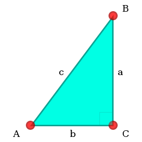
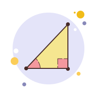
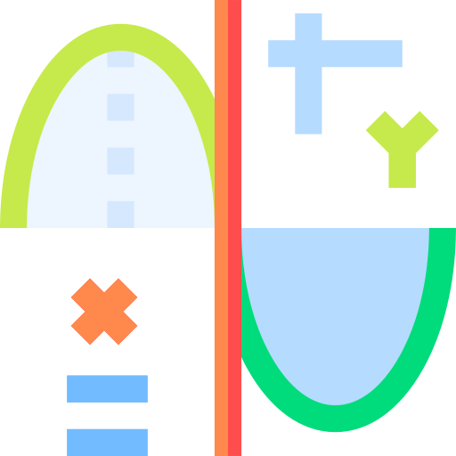

Що таке прямокутний трикутник
Прямокутний трикутник — трикутник, один із кутів якого прямий.
Прямокутний трикутник займає
особливе
місце в
планіметрії, оскільки для нього існують
прості співвідношення між сторонами і кутами.
З чого скаладається прямокутний трикутник
Сторони прямокутного трикутника мають власні назви. Дві сторони, що утворюють
прямий
кут називаються катетами, а третя сторона — гіпотенузою.Традиційно катети позначаються літерами
a та b, а гіпотенуза — літерою c

Властивості прямокутного трикутника
- Сума гострих кутів прямокутного трикутника дорівнює 90°.
- Якщо у прямокутному трикутнику один з гострих кутів дорівнює 30°, то протилежний цьому куту
катет
буде дорівнювати половині гіпотенузи.
- Якщо катет прямокутного трикутника дорівнює половині гіпотенузи, то кут, що лежить проти цього
катета, дорівнює 30°.
- Медіана, проведена до гіпотенузи прямокутного трикутника, ділить його на два рівнобедрених
трикутники, оскільки медіана дорівнює половині гіпотенузи.
- Якщо описати коло навколо прямокутного трикутника, то гіпотенуза буде діаметром кола.
Ознаки рівності прямокутних трикутників
У прямокутного трикутника є такі ознаки рівності:
- За двома катетами. Якщо катети одного прямокутного трикутника дорівнюють відповідно катетам другого,
то такі трикутники рівні.
- За катетом і прилеглим гострим кутом. Якщо катет і прилеглий до нього гострий кут одного
прямокутного трикутника дорівнюють відповідно катету й прилеглому до нього гострому куту другого, то
такі трикутники рівні.
- За катетом і протилежним гострим кутом. Якщо катет і протилежний йому гострий кут одного
прямокутного трикутника дорівнюють відповідно катету й протилежно йому гострому куту другого, то
такі трикутники рівні.
- За гіпотенузою і катетом. Якщо гіпотенуза і катет одного прямокутного трикутника дорівнюють
відповідно гіпотенузі й катету другого, то такі трикутники рівні.
- За гіпотенузою і гострим кутом. Якщо гіпотенуза і гострий кут одного прямокутного трикутника
дорівнюють відповідно гіпотенузі й гострому куту другого, то такі трикутники рівні.

Тригонометрія у прямому трикутнику
Тригонометричні функції для гострих кутів можна визначити як відношення сторін
прямокутного трикутника.
- Синусом гострого кута прямокутного трикутника є відношення протилежного катета до
гіпотенузи.
-
Косинусом гострого кута прямокутного трикутника є відношення прилеглого катета до
гіпотенузи.
- Тангенсом гострого кута прямокутного трикутника є відношення протилежного катета до
прилеглого катета.
- Котангенсом гострого кута прямокутного трикутника є відношення прилеглого катета до
протилежного катета.

Звідси можна зробити висновок, що:
- Щоб знайти катет, протилежний до гострого кута прямокутного трикутника, потрібно гіпотенузу
помножити на синус цього кута, або прилеглий катет помножити на тангенс цього кута.
- Щоб знайти катет, прилеглий до гострого кута прямокутного трикутника, потрібно гіпотенузу помножити
на косинус цього кута, або протилежний катет помножити на котангенс цього кута.
- Щоб знайти гіпотенузу, потрібно катет, прилеглий до гострого кута, поділити на косинус цього кута,
або катет, протилежний до гострого кута, поділити на синус цього кута.
На початок